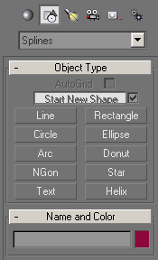

Panneau Créer/Shapes
Le bouton Shapes du panneau Create donne accès aux fonctions de création 2D.
Une boite déroulante ne donne qu'un choix unique splines (par opposition à 3DSMax capable de dessiner des NURBS)
Les formes primitives proposées sont complètement paramétrables. Mais la forme la plus utilisée est la plus basique: Line. Elle permet de dessiner des segments de droite élémentaires aux courbes de Bézier assez élaborées. Les splines sont détaillées sur cette page.